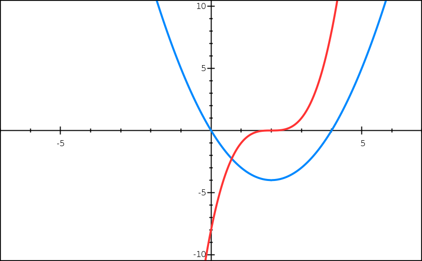
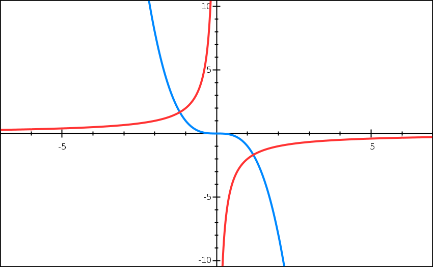
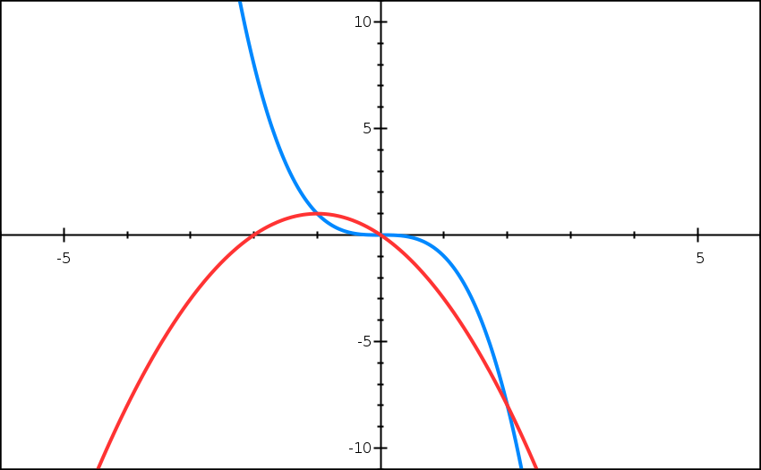

Solution:
Part a) y = x(x − 4), y = (x − 2)³
Step 1: Sketch y = x(x − 4)
y = x(x − 4)
Find x-intercepts:
Set y = 0:
x(x − 4) = 0
x = 0 or x = 4
x-intercepts: (0, 0), (4, 0)
Find y-intercept:
Set x = 0:
y = 0(0 − 4) = 0
y-intercept: (0, 0)
Shape:
Expanding the equation: y = x2 − 4x
This is a parabola (quadratic) with positive coefficient, opening upward.
Vertex (turning point) is at x = 2 (midpoint between the roots 0 and 4).
This is a quadratic curve passing through the origin with roots at x = 0 and x = 4.
Step 2: Sketch y = (x − 2)³
y = (x − 2)3
Find x-intercepts:
Set y = 0:
(x − 2)3 = 0
(x − 2)(x − 2)(x − 2) = 0
x = 2, x = 2, x = 2
x-intercept: (2, 0) [inflection point]
Find y-intercept:
Set x = 0:
y = (0 − 2)3 = −8
y-intercept: (0, −8)
Shape:
Coefficient of x3 is positive (1), so curve rises to the right.
Point of inflection at (2, 0) where the curve passes through smoothly.
This is a cubic curve with a repeated root at x = 2, creating a point of inflection where the curve touches the x-axis.
Step 3: Sketch both curves on the same axes
i) Sketch:
• Draw
y = x(x − 4) as an upward-opening parabola through (0, 0) and (4, 0)
• Draw
y = (x − 2)3 as a cubic curve through (2, 0) with point of inflection
• Label both curves clearly

Both curves are plotted on the same coordinate system to visualize their intersection points.
Step 4: Count intersection points and write equation
ii) Number of points of intersection:
By observing the sketch, the two curves (the parabola and the cubic) intersect at 1 point.
iii) Equation for x-coordinates of intersection points:
At intersection points, both y-values are equal:
x(x − 4) = (x − 2)3
Intersection equation: x(x − 4) = (x − 2)³
For this question we are asked not to solve this equation, but solving it would give us the x-coordinates of the intersection points (where the curves meet each other).
✨ Final Answers:
i) Both curves sketched on same axes (see graph above)
ii) Number of intersection points: 1
iii) Intersection equation: x(x − 4) = (x − 2)3 ✨
Part b) y = −x³, y = −2/x
Step 1: Sketch y = −x³
y = −x3
Find x-intercepts:
Set y = 0:
−x3 = 0
x = 0
x-intercept: (0, 0) [inflection point]
Find y-intercept:
Set x = 0:
y = −(0)3 = 0
y-intercept: (0, 0)
Shape:
Coefficient of x3 is negative (−1), so the curve:
• Rises from bottom left
• Falls to bottom right
Point of inflection at origin (0, 0).
This is a cubic curve with negative coefficient, passing through the origin with a point of inflection there.
Step 2: Sketch y = −2/x
y = −2/x
Key features:
• Domain: x ≠ 0 (cannot divide by zero)
• Asymptotes are at x = 0 (y-axis) and y = 0 (x-axis) — the curve approaches but never touches these axes
• Constant k = −2 (negative), so curves appear in quadrants 2 and 4
Shape:
• In quadrant 2 (negative x, positive y): curve approaches origin and axes
• In quadrant 4 (positive x, negative y): curve approaches origin and axes
This is a reciprocal curve with hyperbolic shape in quadrants 2 and 4, never touching the axes.
Step 3: Sketch both curves on the same axes
i) Sketch:
• Draw
y = −x3 passing through origin with characteristic cubic shape (falling to right)
• Draw
y = −2/x as hyperbola in quadrants 2 and 4
• Label both curves clearly

Both curves are plotted on the same coordinate system to visualize their intersection points.
Step 4: Count intersection points and write equation
ii) Number of points of intersection:
By observing the sketch, the curves intersect at 2 points (one in each of quadrants 2 and 4).
iii) Equation for x-coordinates of intersection points:
At intersection points, both y-values are equal:
−x3 = −2/x
Intersection equation: −x³ = −2/x
For this question we are asked not to solve this equation, but solving it would give us the x-coordinates of the intersection points (where the curves meet each other).
✨ Final Answers:
i) Both curves sketched on same axes (see graph above)
ii) Number of intersection points: 2
iii) Intersection equation: −x3 = −2/x ✨
Part c) y = −x³, y = −x(x + 2)
Step 1: Sketch y = −x³
y = −x3
Find x-intercepts:
Set y = 0:
−x3 = 0
x = 0
x-intercept: (0, 0) [inflection point]
Find y-intercept:
Set x = 0:
y = −(0)3 = 0
y-intercept: (0, 0)
Shape:
Coefficient of x3 is negative (−1), so the curve:
• Rises from bottom left
• Falls to bottom right
Point of inflection at origin (0, 0).
This is a cubic curve with negative coefficient, passing through the origin with a point of inflection there.
Step 2: Sketch y = −x(x + 2)
y = −x(x + 2)
Find x-intercepts:
Set y = 0:
−x(x + 2) = 0
x = 0 or x + 2 = 0
x = 0 or x = −2
x-intercepts: (−2, 0), (0, 0)
Find y-intercept:
Set x = 0:
y = −0(0 + 2) = 0
y-intercept: (0, 0)
Shape:
Expanding the equation: y = −x2 − 2x
This is a parabola (quadratic) with negative coefficient, opening downward.
Vertex (turning point) is at x = −1 (midpoint between the roots −2 and 0).
This is a quadratic curve (inverted parabola) passing through the origin with roots at x = −2 and x = 0.
Step 3: Sketch both curves on the same axes
i) Sketch:
• Draw
y = −x3 passing through origin with characteristic cubic shape (falling to right)
• Draw
y = −x(x + 2) as a downward-opening parabola through (−2, 0) and (0, 0)
• Label both curves clearly

Both curves are plotted on the same coordinate system to visualize their intersection points.
Step 4: Count intersection points and write equation
ii) Number of points of intersection:
By observing the sketch, the two curves (the cubic and the parabola) intersect at 3 points.
iii) Equation for x-coordinates of intersection points:
At intersection points, both y-values are equal:
−x3 = −x(x + 2)
Intersection equation: −x³ = −x(x + 2)
For this question we are asked not to solve this equation, but solving it would give us the x-coordinates of the intersection points (where the curves meet each other).
✨ Final Answers:
i) Both curves sketched on same axes (see graph above)
ii) Number of intersection points: 3
iii) Intersection equation: −x3 = −x(x + 2) ✨